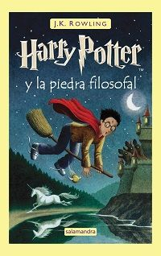
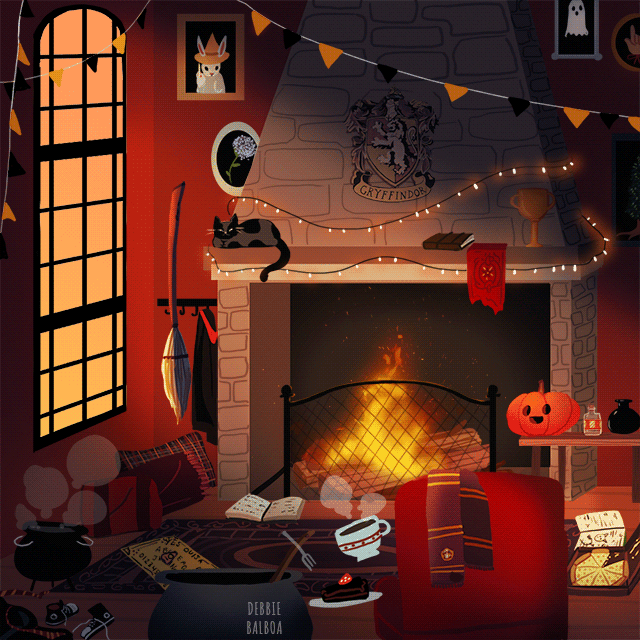

Harry Potter - J.K. Rowling
1. La Piedra Filosofal

Sipnosis
Harry Potter nunca conoció a sus padres. Desde bebé ha vivido con sus horribles tíos y primo, pero cuando está a punto de cumplir diez años, una serie de misteriosas y obstinadas cartas, y Hagrid, un gigantón bonachón, le desvelan que no es un niño normal: es un mago destinado a pasar a la historia; y que además irá a estudiar a Hogwarts, un colegio de magos. Allí conocerá a Ron y Hermione, de los que se hará amigo, y un secreto que pondrá en peligro su vida y la del resto de los hechiceros.
Reseña
Al principio de Harry Potter Y La Piedra Filosofal, Harry de bebé se ha quedado huérfano, y unos peculiares personajes (Dumbledore, la profesora McGonagall transformada en gata, y Hagrid, quien viene volando en una moto) le encuentran un nuevo hogar. Durante casi diez años, Harry llevará una vida horrible con sus horrendos y materialistas tíos y primo.
Aquí Rowling se centra en mofarse de los familiares, que son tan ridículos (y tan normales) que acabas riéndote, a pesar de lo mal que tratan a Harry. Lo que más me gusta de esta parte, y me parece genial, es la llegada de cartas dirigidas al chico, empeñadas en que lleguen a su destinatario, y las medidas tan absurdas que toman los tíos para evitarlo.
Antes de ir a Hogwarts, Harry tiene que comprar material escolar (varitas mágicas y demás) y sacar dinero, y para ello se mete en un pasadizo secreto de Londres con Hagrid, donde descubre un mundo extrañísimo de magos y seres maravillosos.
Más adelante, para viajar en tren tendrá que ir a la plataforma 9¾ en King’s Cross, a la que “lógicamente” se accede atravesando la pared.
En Hogwarts, para mantener el interés durante el nudo de la novela, Rowling creará varias tramas que se irán entrelazando. La principal es el misterioso paquete que Hagrid sacó del banco de goblins (no hay que darle muchas vueltas para saber qué esconde; solo hace falta leerse el título de la novela).
Constantemente Rowling se va por las ramas, desviándose de esa trama. Por una parte, hay que saber por qué el profesor Snape odia tanto a Harry (y qué se trae entre manos); pero también avanza la amistad entre Harry, Ron y la empollona Hermione; y la enemistad con Malfoy; y un dragoncito bebé que Hagrid se empeña en adoptar; más el campeonato de Quidditch y la pérdida o ganancia de puntos de las distintas casas para saber cuál ganará al final del curso; y alguna que otra clase.
